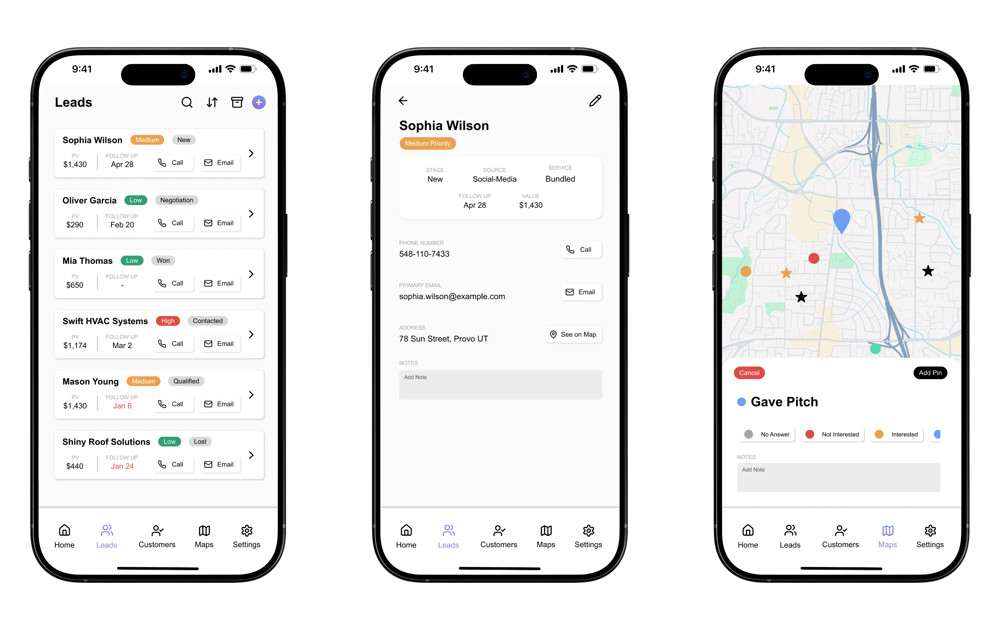

Otternaut
A mobile app interface that I created for the Otternaut CRM platform. I was brought on to translate the look, feel, and functionality of the web app into a mobile-friendly interface.
Strategy
The intended users of the app, door-to-door sales employees, were the primary focus when it came to key functionality. Lead creation, organization, and an interactive map were some of the important things users will need. One of the challenging parts of this project was the information density required. There are many lead and customer details that need to be seen at a glance without feeling cluttered or too dense. This required a careful consideration of what was really important to see and in what order it ought to be seen.
The Leads, Lead Profile, and Map pages.